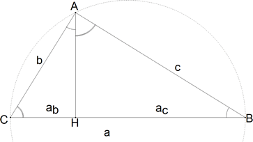
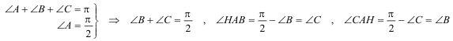
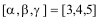
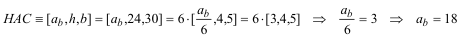
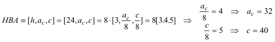
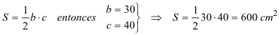

Para el aula Problema 283
18.26 Un cateto de un triángulo rectángulo mide 30 cm, y la altura relativa a la hipotenusa mide 24 cm. Calcular:
1. La proyección del cateto sobre la hipotenusa 2. La proyección del otro cateto sobre la hipotenusa 3. El otro cateto 4. El área del triángulo Lazcano, I. Barolo, P. (1991): Matemáticas 7º EGB. Edelvives. Zaragoza (pag 165)
Solución de José María Pedret, Ingeniero Naval. Esplugues de Llobregat (Barcelona). (1 de diciembre de 2005) |
|
SOLUCION |
|
Resolvemos este ejercicio, a partir de los datos iniciales y las relaciones del propio triángulo rectángulo con los triángulos rectángulos que forma en su interior la altura a la hipotenusa. Además nos apoyaremos en que [3,4,5] es una terna pitagórica.
 figura 1
 La igualdad de ángulos comporta que ABC, HBA y HAC son de lados proporcionales.

Para el triángulo HAC podemos escribir

 [1] PROYECCIÓN DEL CATETO SOBRE LA HIPOTENUSA Para el cateto b, la proyección sobre la hipotenusa es ab = 18 cm.
[2] PROYECCIÓN DEL OTRO CATETO SOBRE LA HIPOTENUSA Para el cateto c. la proyección sobre la hipotenusa es ac = 32 cm. [3] EL OTRO CATETO De acuerdo con la figura, el otro cateto es c = 40 cm. [4] EL ÁREA DEL TRIÁNGULO
 |